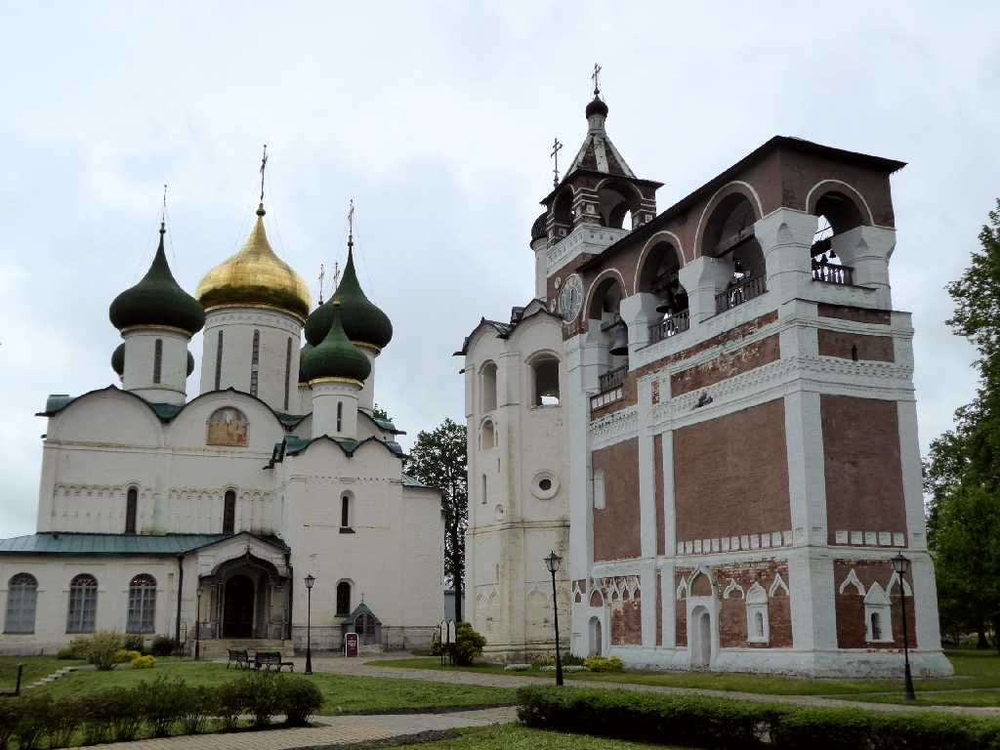
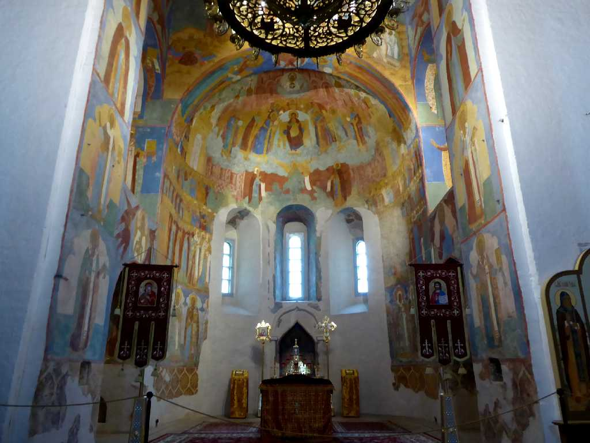
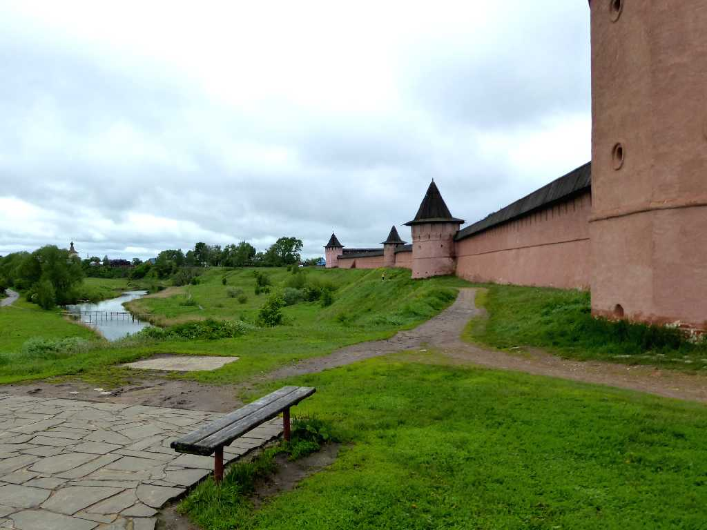
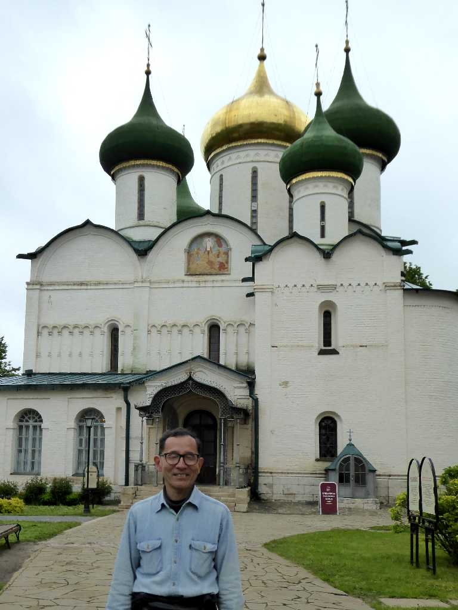

Spaso-Evfimevsky Monastery Suzdal
１４世紀に創られたスーズダリのスパソエフフィミエフスキー男子修道院

Altar Spaso-Evfimevsky Monastery
救世主スパソ修道院の開祖エフフィミエフの名がついたスーズダリで最大の修道院

Wall Spaso-Evfimevsky Monastery Kamenka River
モンゴルのタタールの戦いのためカメンカ川の畔に創られ平均高８ｍ周囲１,１６０ｍのレンガ壁で守られている

June 6 2017 Spaso-Evfimevsky Monastery